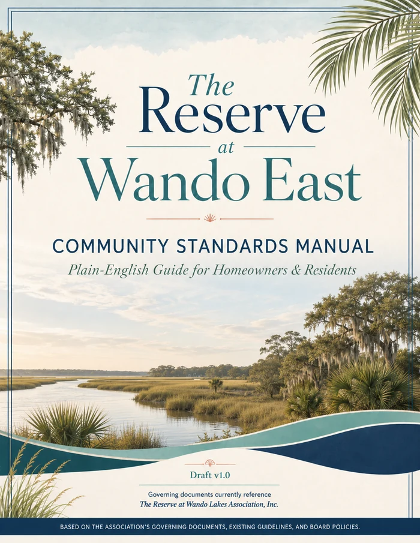

Official reference library
Governing Documents
The legal association documents use the name The Reserve at Wando Lakes Association, Inc. This public website currently uses The Reserve at Wando East as the community-facing name.
Association documents
Core documents & forms
Open or save the PDFs below. When a plain-English website summary conflicts with a governing document, the governing document controls.
Amended & Restated Declaration / CCRPrimary recorded Declaration of Covenants, Conditions and Restrictions.
Association BylawsBoard, membership, meetings and Association governance procedures.
Architectural Review GuidelinesExisting guidance for planters, storm doors, parking, front-yard items and other visible standards.
Architectural Modification Request FormUse when requesting approval for applicable exterior changes.
Fencing Policy Resolution (2013)Board resolution governing designated fencing units and approved fence configuration.
Covenants — Scanned CopyAdditional scanned copy retained with the Association's available document set.
Plain-English companion
Need the practical version?
The Community Standards page distills the most common day-to-day questions into a readable homeowner guide covering maintenance, parking, waste, fencing, ARC requests, access and enforcement.
Open Community Standards